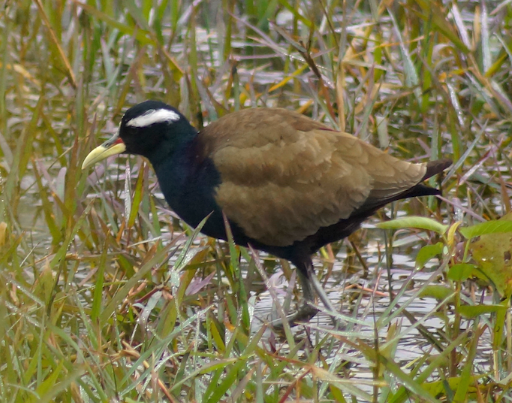
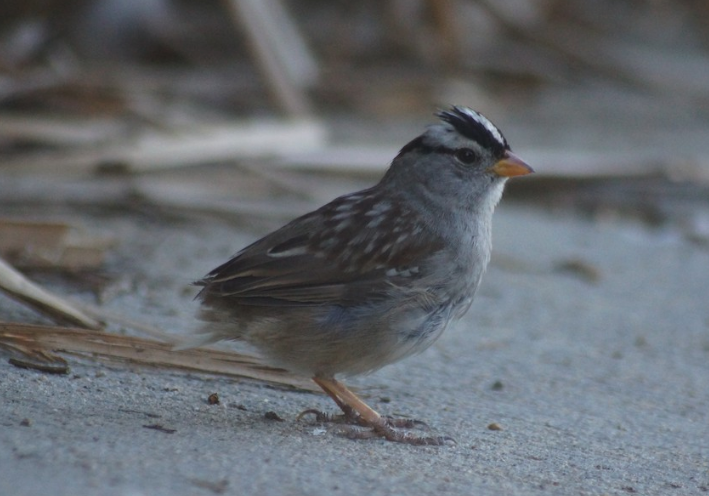
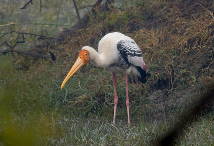
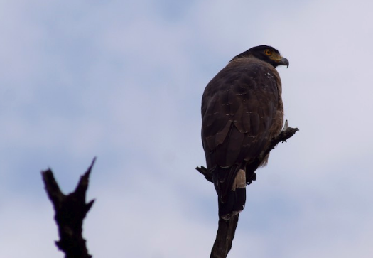
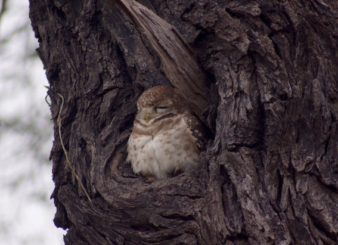

|  |
Birding has been a passion of mine for over 15 years. Observing and appreciating birds in nature has inspired my travels both across the U.S. and abroad, spanning 30 states, over 20 countries, and has driven me to see almost 1200 species of the world's nearly 10,000. With the current state of the world in lockdown over COVID-19, this site is dedicated to highlighting aspects of birding I can still access in quarantine. This includes a list of species seen and heard in my yard here in Los Angeles, a selection of decent bird photos I've taken, and a compiling of hotspot locations - along with some fond memories. Thanks, and enjoy! |
 |
|    | ||